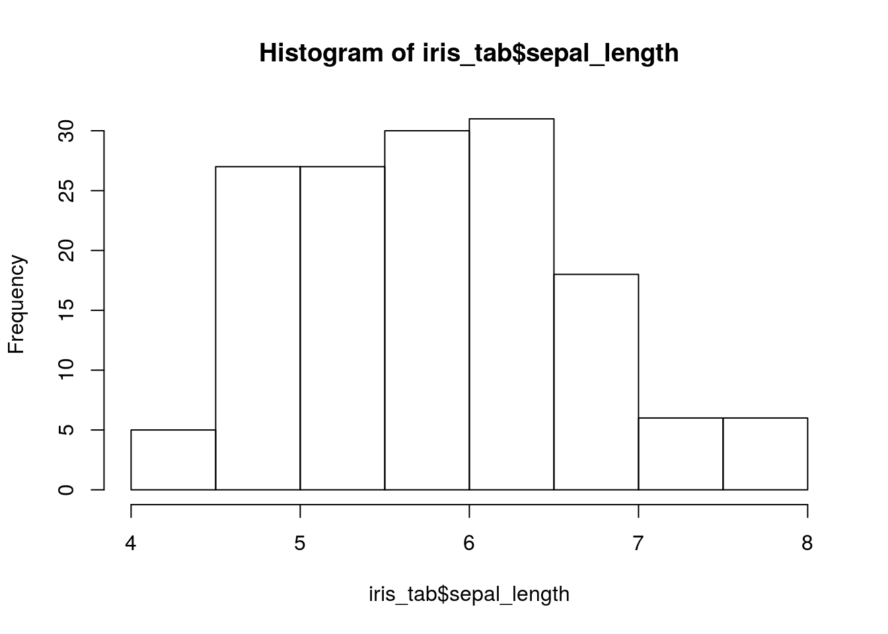

4 PCA
4.1 Read data
iris_tab <- read.csv("https://gist.githubusercontent.com/curran/a08a1080b88344b0c8a7/raw/d546eaee765268bf2f487608c537c05e22e4b221/iris.csv")4.2 Head data
head(iris_tab)## sepal_length sepal_width petal_length petal_width species
## 1 5.1 3.5 1.4 0.2 setosa
## 2 4.9 3.0 1.4 0.2 setosa
## 3 4.7 3.2 1.3 0.2 setosa
## 4 4.6 3.1 1.5 0.2 setosa
## 5 5.0 3.6 1.4 0.2 setosa
## 6 5.4 3.9 1.7 0.4 setosa4.3 Summary of the data
summary(iris_tab)## sepal_length sepal_width petal_length petal_width
## Min. :4.300 Min. :2.000 Min. :1.000 Min. :0.100
## 1st Qu.:5.100 1st Qu.:2.800 1st Qu.:1.600 1st Qu.:0.300
## Median :5.800 Median :3.000 Median :4.350 Median :1.300
## Mean :5.843 Mean :3.054 Mean :3.759 Mean :1.199
## 3rd Qu.:6.400 3rd Qu.:3.300 3rd Qu.:5.100 3rd Qu.:1.800
## Max. :7.900 Max. :4.400 Max. :6.900 Max. :2.500
## species
## setosa :50
## versicolor:50
## virginica :50
##
##
## 4.4 Check the distribution of the data
hist(iris_tab$sepal_length)
4.5 Eigendecomposition - Computing Eigenvectors and Eigenvalues
The eigenvectors and eigenvalues of a covariance (or correlation) matrix represent the “core” of a PCA: The eigenvectors (principal components) determine the directions of the new feature space, and the eigenvalues determine their magnitude. In other words, the eigenvalues explain the variance of the data along the new feature axes.
4.5.1 Covariance Matrix
The classic approach to PCA is to perform the eigendecomposition on the covariance matrix \(\Sigma\), which is a \(d \times d\) matrix where each element represents the covariance between two features. The covariance between two features is calculated as follows:
\(\sigma_{jk} = \frac{1}{n-1}\sum_{i=1}^{N}\left( x_{ij}-\bar{x}_j \right) \left( x_{ik}-\bar{x}_k \right).\)
We can summarize the calculation of the covariance matrix via the following matrix equation:
\(\Sigma = \frac{1}{n-1} \left( (\mathbf{X} - \mathbf{\bar{x}})^T\;(\mathbf{X} - \mathbf{\bar{x}}) \right)\)
where \(\mathbf{\bar{x}}\) is the mean vector \(\mathbf{\bar{x}} = \sum\limits_{i=1}^n x_{i}.\)
The mean vector is a \(d\)-dimensional vector where each value in this vector represents the sample mean of a feature column in the dataset.
```
4.6 References
https://sebastianraschka.com/Articles/2015_pca_in_3_steps.html#about-iris
How to read PCA biplots and scree plots: https://blog.bioturing.com/2018/06/18/how-to-read-pca-biplots-and-scree-plots/
Principal Component Analysis (PCA): https://learnche.org/pid/latent-variable-modelling/principal-component-analysis/index